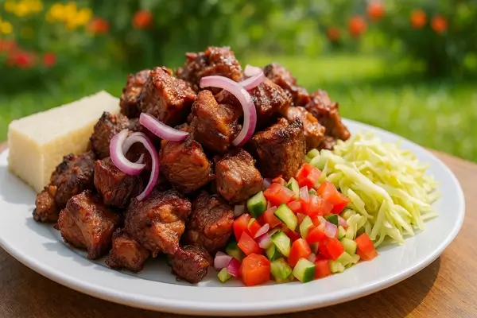
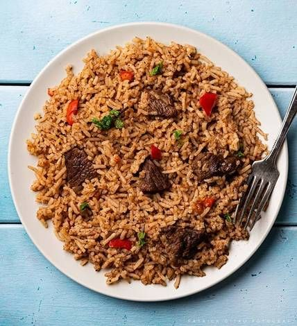

Experience the True Flavors of Kenya
Welcome to a culinary journey through the heart of East Africa. We use fresh, locally sourced ingredients to bring you authentic and delicious Kenyan cuisine.
VIEW OUR MENUOur Story
Founded by a family with a passion for sharing their heritage, Foods of Kenya is more than just a restaurant—it's a celebration of culture and community. Every dish tells a story, from the highlands of Central Kenya to the coast of Mombasa. Come and taste the tradition!
Popular Dishes

Ugali & Sukuma Wiki
A classic staple: cornmeal porridge served with collard greens.

Nyama Choma
Perfectly grilled meat, a Kenyan barbecue favorite.

Pilau
A fragrant rice dish cooked with spices and meat.